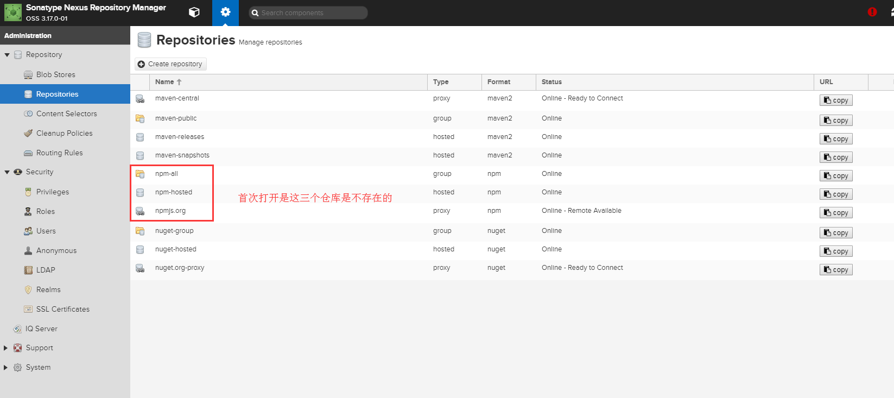
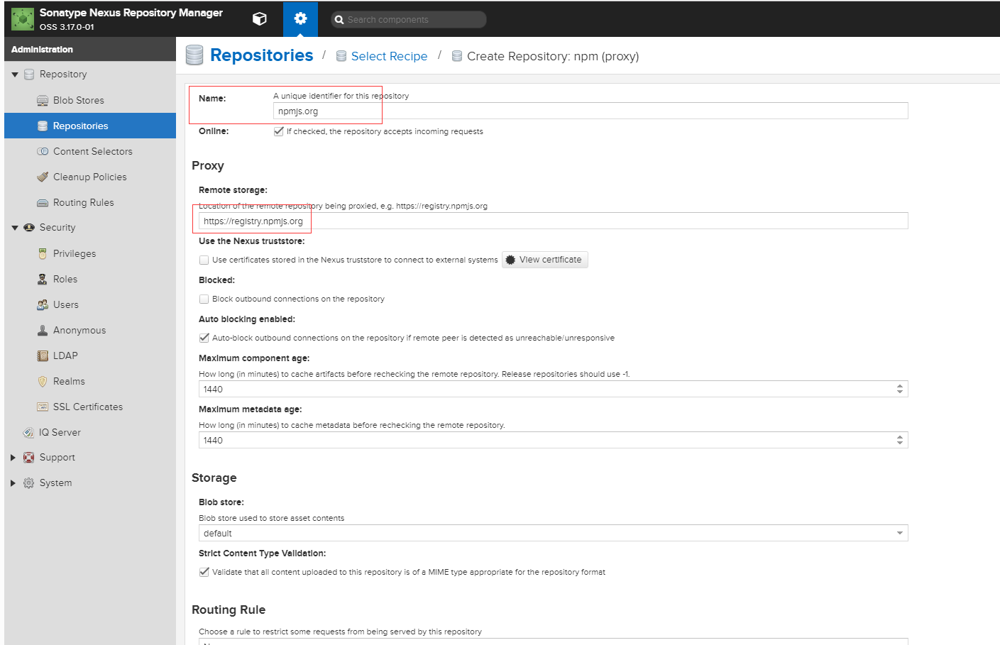
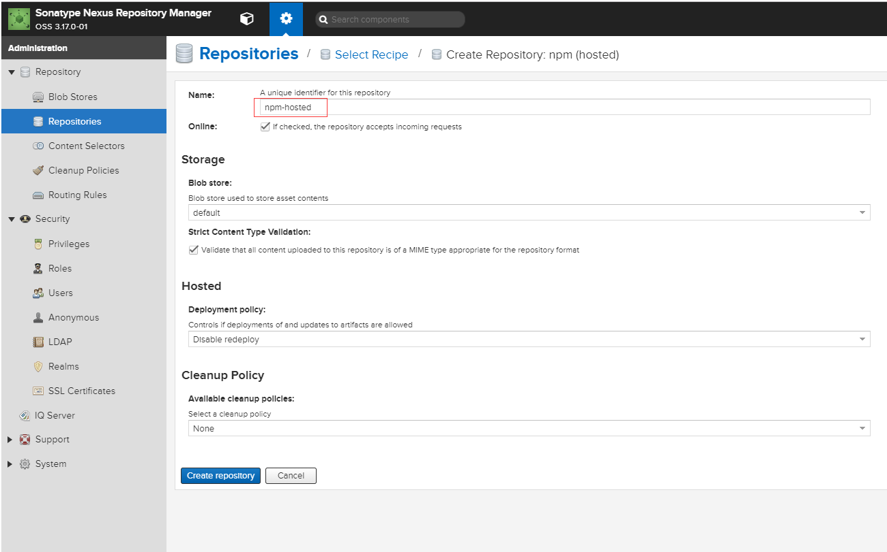
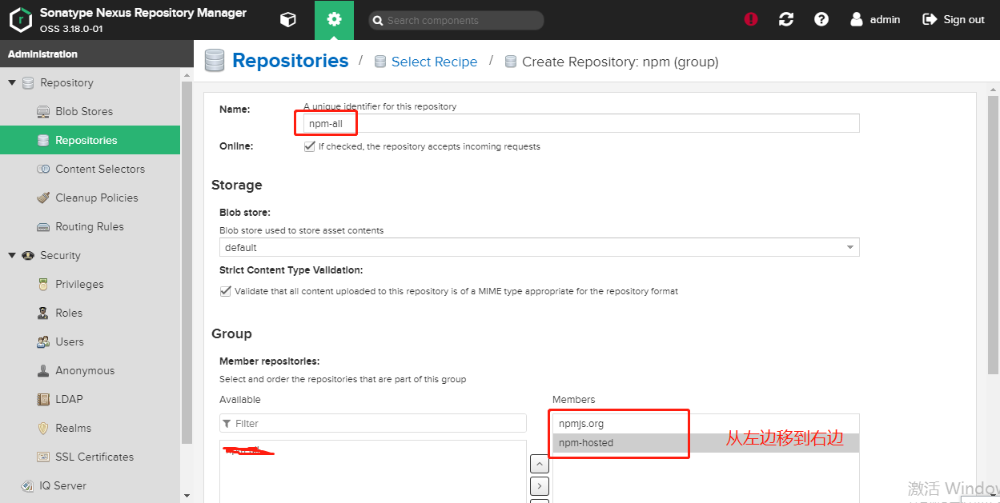
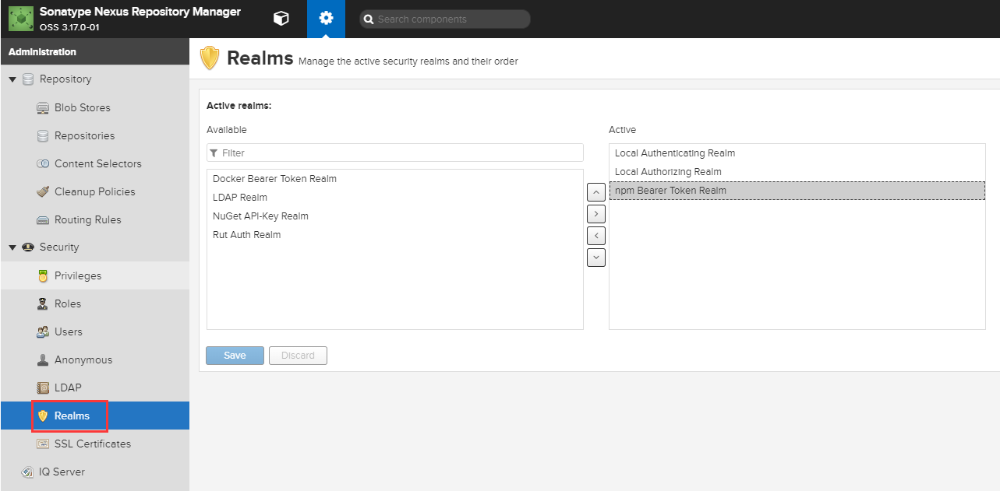
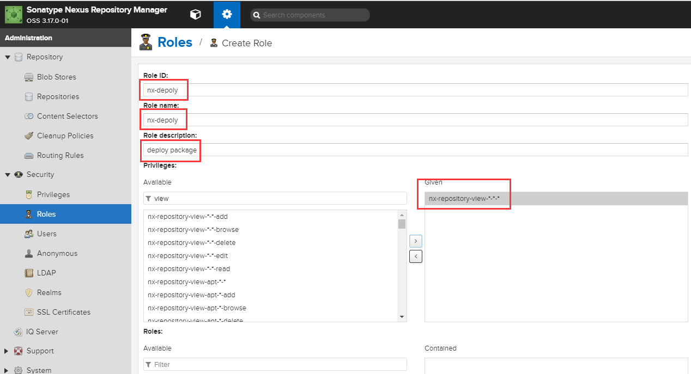
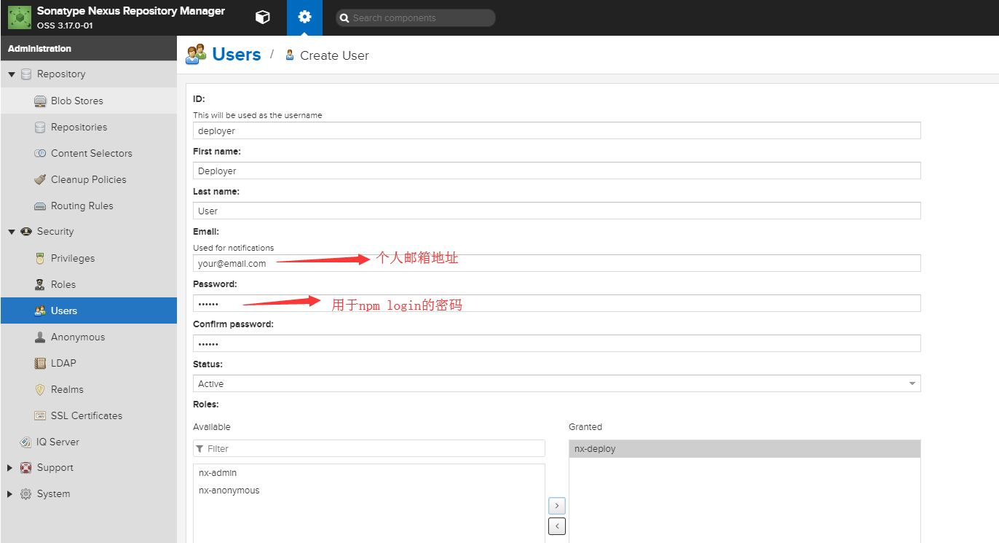
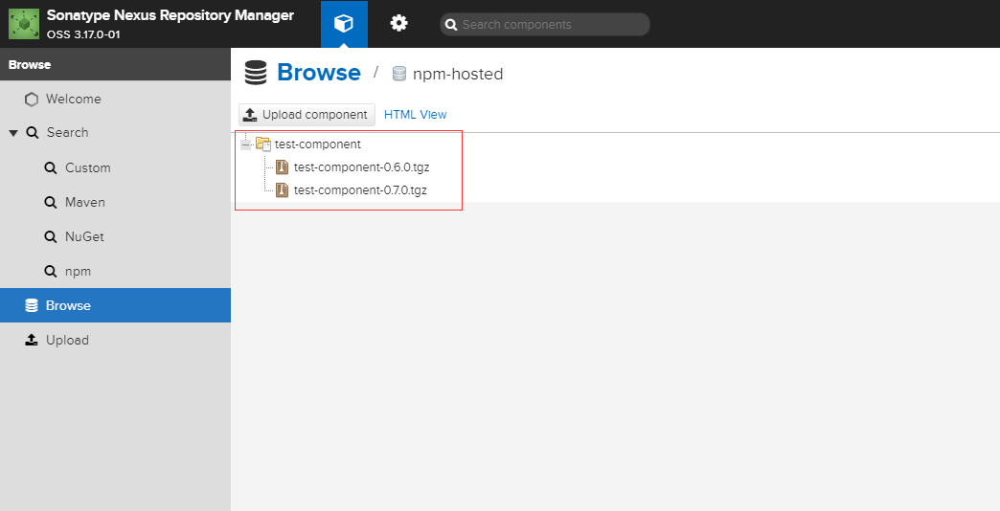

主要分为两部分：第一部分是nexus私有仓库的搭建，第二部分是vue-cli 3的组件搭建并发布到nexus本地仓库。
nexus私有仓库的搭建
环境搭建
- 首先需要在官网下载nexus windows版本（注意：需要翻墙，自备梯子）。
- 以管理员身份运行cmd（注意：必须是管理员运行且必须是cmd，win10的powershell都会报错），然后切换到
C:\node\nexus\nexus-3.18.0-01-win64\nexus-3.18.0-01\bin软件下载后的解压目录。
nexus启动前，最好修改下C:\node\nexus\nexus-3.18.0-01-win64\nexus-3.18.0-01\bin\nexus.vmoptions的配置，防止出现内存不足的报错导致无法启动，我这里修改为默认都是约2G1
2
3-Xms600m
-Xmx600m
-XX:MaxDirectMemorySize=1G
1 | nexus.exe /install #执行安装命令， 成功后会提示Installed service 'nexus |
- 启动完毕后,进入 http://(本机IP):8081（最好是自定义电脑ip），点击右上角Sign In进行登录，默认账号 admin
默认密码存放在C:\node\nexus\nexus-3.18.0-01-win64\sonatype-work\nexus3\**.password打开文件后复制密码串进行登录，
登录后会提示修改密码，修改完重新登录即可。然后**.password文件就会自动删除。
添加npm仓库
点击左侧菜单Repositories 查看仓库列表

- 点击Create repository按钮创建仓库
- group表示分组 hosted表示本机私有 proxy表示远程代理（中央仓库）
- 若registry配置为group（包括hosted和proxy）,首次会从hosted拉取，若无则从proxy拉取并缓存，下次则直接从缓存取
添加npm(proxy)仓库：
选择npm(proxy)
输入Name: npmjs.orgRemote storage: https://registry.npmjs.org
如图：
添加npm(hosted)仓库：
选择npm(hosted)
输入Name：npm-hosted用于存放自己发布的私有包
如图：
添加npm(group)仓库：
选择npm(group)
输入Name: npm-group，并在Member repositories里选择之前添加的两个移到右边
如图：

配置与验证npm仓库
添加发布角色用户及权限
- 添加权限认证 将npm Beared Token Realm 添加至右边
如图：
 - 创建nx-deploy角色并赋予一个nx-repository-view—*的权限码
 - 创建deployer用户 同时设定角色为nx-deploy

变更依赖源
安装nrm npm i -g nrm
1 | npm config set registry https://registry.npm.taobao.org #设置为探宝源 |
发布流程
每次发布前记得在package.json中检查version 有没有修改，要确认比上一个版本号高
编译文件
yarn lib或者使用npm
登录npm
npm login -registry http://192.168.38.64:8081/repository/npm-hosted/
发布
npm publish -registry http://192.168.38.64:8081/repository/npm-hosted/
发布成功后在npm-hosted 能看到发布后的包

使用方式
1 | "dependencies": { |
项目启动
yarn serve或者使用npm
组件库文件目录结构
1 | ├── examples # 示例展示 |
这里贴一下vue.config.js文件的配置：
1 | const path = require('path'); |